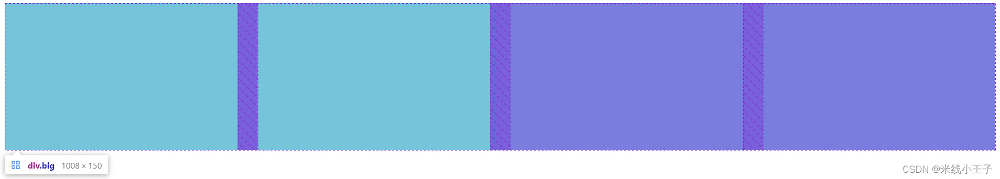
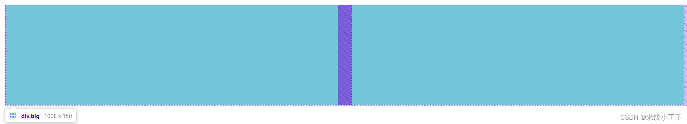
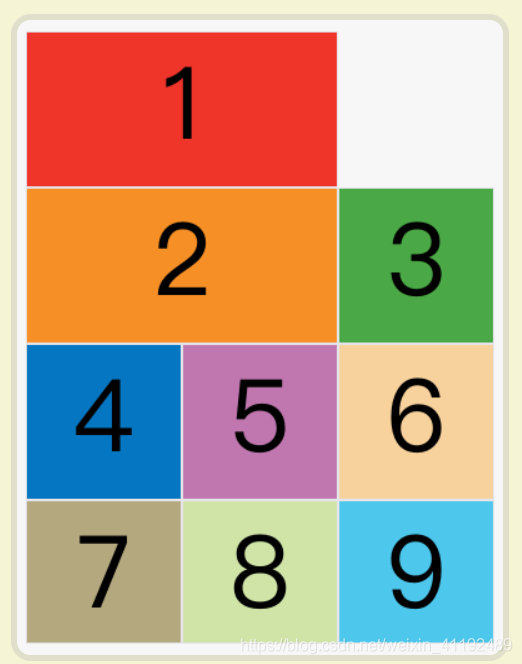
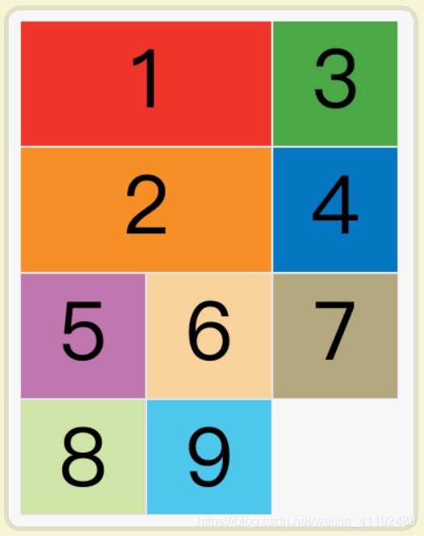
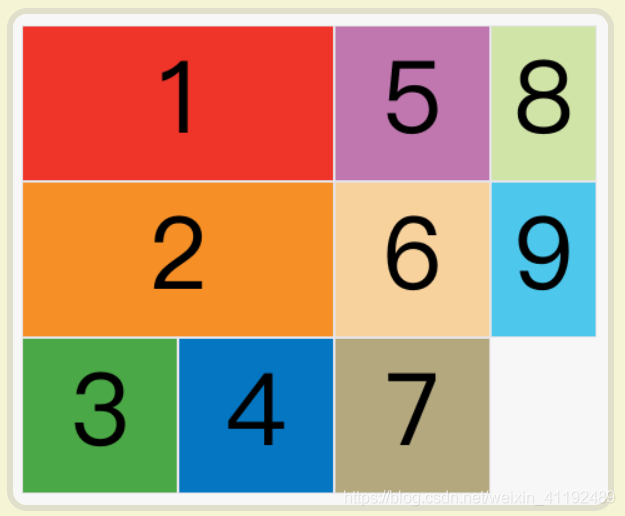
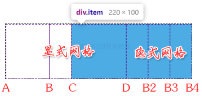

CSS栅格布局
CSS 栅格布局
css【详解】grid布局—— 网格布局（栅格布局）_朝阳39的博客-CSDN博客
基本术语
容器：采用网格布局的区域
项目：只有网格区域的顶层子元素，网格布局只对项目有效，对项目的子元素无效
使用
块级容器display: grid;
行内容器display: inline-grid;
使用网格布局时，float、display：inline-block、display：table-cell、vertical-align 和 column-* 等设置会失效。
划分行/列 grid-template-rows/grid-template-columns
单位
- 绝对值 px
grid-template-columns: 100px 100px 100px;分三列，各 100px - 百分比值 %
grid-template-columns: 25% 25% 25% 25%均分四列 - 比例值 fr
- 和大于 1(可分配区域按 和值 份数分)
grid-template-columns: 1fr 2fr 3fr分 6 份，3 列: 1/6、2/6、3/6 - 和小于 1(可分配区域 * fr 值)
grid-template-columns: .25fr .25fr两列各占总区域 1/4，剩余 1/2 区域
- 和大于 1(可分配区域按 和值 份数分)
混合使用
- 比例值与绝对值
grid-template-columns: 100px .25fr .25fr可分配区域=总区域 -100px，2、3 列为可分配区域 * 1/4 - 比例值和 auto
可分配区域=总区域 -auto 内容区域- 比例值和大于 1
grid-template-columns: auto 1fr 1fr第 2、3 列为可分配区域的 1/2 - 比例值和小于 1
grid-template-columns: auto .25fr .25fr第 2、3 列为可分配区域 * 1/4，第 1 列为总区域剩余部分
- 比例值和大于 1
函数
minmax(min, max)产生一个长度范围repeat(重复次数，重复值)重复产生值fit-content()尺寸适应内容，又不会太宽，超过参数值 (只支持绝对值和百分比值，不支持 fr 值)
1 | |
auto-fill

auto-fit

auto-fill ：剩余空间保留空列，没有实质内容auto-fit：剩余空间平均分配给所有子项
无论容器大小，始终保持子项均匀分配。
1 | |
每一行最后一列总是 20%
1 | |
尺寸适应内容，但不超过 100px
1 | |
关键字
min-content：一排或一列中最小内容中最小的那一个max-content：一排或一列中最大内容中最大的那一个auto：浏览器决定长度
网格线命名
给八根网格线命名
1 | |
公共网格线（两侧）命名
1 | |
设置行/列间距
row-gap：行间距column-gap：列间距gap：column-gap row-gap简写
都支持数值和百分比值，gap 还支持 calc() 。
指定区域
grid-template-areas
网格区域需要是规整的矩形区域，否则无效。
不属于任何区域的单元格使用 . 表示。
1 | |
区域命名会影响到网格线的命名，区域左侧为：<name>-start，区域右侧为：<name>-end 。
改变网格布局的布局顺序
grid-auto-flow
row：先行后列row dense：先行后列，尽可能紧密排列，不留空格column：先列后行column dense：先列后行，尽可能紧密排列，不留空格
row

row dense

column dense

设置单元格内对齐方式
- justify-items ：指定单元格内容水平对齐方式
- stretch：【默认值】拉伸，占满单元格的整个宽度
- start：对齐单元格的起始边缘
- end：对齐单元格的结束边缘
- center：单元格内部居中
- align-items ：指定单元格内容的垂直对齐方式
- normal：【默认值】会根据使用场景的不同表现为 stretch 或者 start(取决于子项 是否具有内在尺寸或内在比例)
- stretch：拉伸，占满单元格的整个宽度
- start：对齐单元格的起始边缘
- end：对齐单元格的结束边缘
- center：单元格内部居中
- baseline：基线对齐（align-items 属性特有属性值）
- place-items
简写：align-items justify-items
用法同上，但只作用于单个项目
- justify-self
- align-self
- place-self
设置容器内对齐方式
需要子项总尺寸小于容器尺寸：
- 子项具有较小的具体尺寸
- 子项尺寸为 auto 同时内容尺寸较小
- justify-content ：整个内容区域在容器中的水平位置（左中右）
- align-content ：整个内容区域在容器中的垂直位置（上中下）
- place-content ：简写 align-content justify-content
取值：
- normal【默认值】效果和 stretch 一样
- start - 对齐容器的起始边框。
- end - 对齐容器的结束边框。
- center - 容器内部居中。
- stretch - 项目大小没有指定时，拉伸占据整个网格容器。
- space-around - 每个项目两侧的间隔相等。所以，项目之间的间隔比项目与容器边框的间隔大一倍。
- space-between - 项目与项目的间隔相等，项目与容器边框之间没有间隔。
- space-evenly - 项目与项目的间隔相等，项目与容器边框之间也是同样长度的间隔。
指定项目的位置
grid-column-start属性：左边框所在的垂直网格线grid-column-end属性：右边框所在的垂直网格线grid-row-start属性：上边框所在的水平网格线grid-row-end属性：下边框所在的水平网格线
属性值可以是负整数，但是不能是 0，负整数表示从右侧开始计数网格线。
也可以指定网格线的名称，可以省略 -start 和 -end ,找不到时会自动补全。
1 | |

数量不够会自动创建隐式网格，在右方或下方，以满足需求。
span 关键字
跨越网格，取值为正整数（非负、非 0、非小数）。
1 | |
1 | |
- 网格线有多个 B 或 B-start
1 | |
grid-column-start: span B 表示离 grid-column-end 位置 最近 的网格线 B 。
grid-column-start: B 表示离 grid-column-end 位置 最远 的网格线 B 。
如果没有 B 或 B-start，则在第一列前创建隐式网格线。
指定项目的区域
1 | |
设置自动生成的行和列
设置隐式网格：
- grid-auto-columns ：列宽，同 grid-template-columns
- grid-auto-rows ：行高，同 grid-template-rows
不指定时根据内容大小决定。
不支持 repeat() 。
其他合并简写属性
grid-template
简写 grid-template-columns、grid-template-rows 和 grid-template-areas
网格线名称总是位于网格尺寸和区域名称两侧。 简写时 [col-name1-end] 和 [col-name2-start] 可分开也可合并。
包含区域名称的 grid-template 缩写属性不支持 repeat() 函数。
grid
简写 grid-template-rows、grid-template-columns、grid-template-areas、 grid-auto-rows、grid-auto-columns、grid-auto-flow
网格实现自适应换行
1 | |
文本换行
overflow-wrap 优先保证单词完整，再考虑截断换行。
| 取值 | 最小内容宽度计算逻辑 | 布局表现（flex / 自适应容器） |
|---|---|---|
break-word |
以「完整单词」为单位计算最小宽度（超长单词算整体） | 元素会优先尝试「撑到完整单词宽度」，再换行，flex 子元素可能更宽； |
anywhere |
以「单个字符」为单位计算最小宽度 | 元素会尽可能收缩到最小宽度（单个字符宽度），flex 子元素更紧凑； |